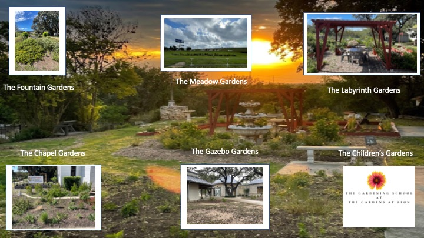

Interactive Garden Directory
Explore the distinct garden zones across our site. Click any framed photo on the map below to view planting palettes, design philosophy, and care protocols.
Master Site Layout

Master map image loading. Check folder path.Click any photo frame on the map above to explore its story.